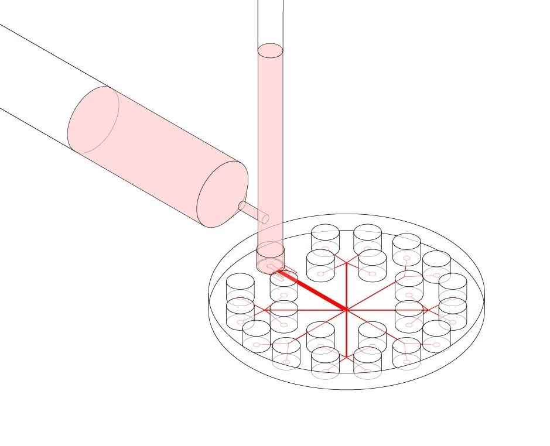

← projects
Microfluidic Designs
The design of the microfluidic chip used in this experiment was based off of a previous microfluidic micropipette device initially conceived of by the Mak Research Lab. The device is intended to model in vitro conditions experienced by typical cancer cells during in vivo invasion out of the tumor stroma; in particular, during migration through subnuclear diameter pores in the densely crosslinked extracellular matrix. Flowing cells into the microfluidic device under a constant applied pressure allows for the observation of the cells’ mechanical deformation in this constriction region. Flowing cells into the device and equalizing the pressure of the inlet and outlet wells allows for an observation of the cells’ invasive behavior and passive force generation. After stress-strain dynamics are observed, cells can be flushed into outlet wells and collected for further genetic or mechanical analysis, or for cell culture expansion.
While cancer metastasis has long been an area of active study, one open question is how the biomechanics of the cell contribute to cell invasion, and to what effect differences in mechanics between cells might affect cancer metastasis. This project investigates the question of why some cancer cells within a bulk tumor population display hyper invasive phenotypes relative to others.
Devices are fabricated through a typical two step process of photo-lithography to create a device master template, followed by soft-lithography to create the device. Fabrication of device masters involved spinning SU8 photoresist on a silicon wafer and selectively exposing regions to UV light using a photomask. Development of the wafer produces the negative master, onto which silicone elastomer can be poured and cured to create the microfluidic device. The elastomer is then cut and bonded to a glass slide. Subsequent autoclave sterilization ensures that cells will not be contaminated during the microfluidic loading step.